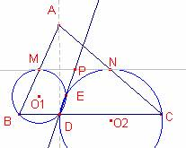

Problema 310
Siga  l’altura al costat
l’altura al costat  del triangle
del triangle  . Siga M i N els punts mig dels costats
. Siga M i N els punts mig dels costats  i
i  , respectivament. Siga E el segon punt d’interseccció de les circumferències circumscrites als triangles
, respectivament. Siga E el segon punt d’interseccció de les circumferències circumscrites als triangles  i
i  . Proveu que la recta DE passa pel punt mig del segment
. Proveu que la recta DE passa pel punt mig del segment  .
.
X Olimpíada Matemática Rioplatense
San Isidro, 13 de Diciembre de 2001
Nivel I – Segundo Día
Solución de Ricard Peiró i Estruch Profesor de Matemáticas del IES 1 de Xest (València) (en valenciano):

Considerem els vèrtex del triangle  amb les següents coordenades cartesianes: .
amb les següents coordenades cartesianes: .
Les coordenades del peu de l’altura  són
són 
Les coordenades del punt mig M del segment  i N punt mig del segment són:
i N punt mig del segment són:  , .
, .
Les coordenades del punt mig P del segment  són
són 
Determinem el centre de la circumferència circumscrita al triangle  :
:
La recta mediatriu del segment  té equació
té equació  .
.
La recta mediatriu del segment té equació .
La intersecció de les rectes , és el centre de la circumferència circumscrita al triangle  . Les seues coordenades són:
. Les seues coordenades són: 
Determinem el centre  de la circumferència circumscrita al triangle
de la circumferència circumscrita al triangle  :
:
La recta mediatriu del segment  té equació
té equació  .
.
La recta mediatriu del segment té equació .
La intersecció de les rectes  ,
,  és el centre de la circumferència circumscrita al triangle
és el centre de la circumferència circumscrita al triangle  . Les seues coordenades són:
. Les seues coordenades són:  .
.
Siga E el punt d’intersecció d’ambdues circumferències (distint de D)
La recta que passa pels punts D, E és perpendicular al segment .
La recta que passa per D, E és la recta que passa per D i té per vector director .
Simplificant el vector director és ).
L’equació de la recta que passa pels punts D, E té equació: 
El punt  és de la recta r ja que satisfà la seua equació:
és de la recta r ja que satisfà la seua equació:
.
Amb Cabri:
Figura barroso310.fig
Applet created on 1/05/06 by Ricard Peiró with CabriJava